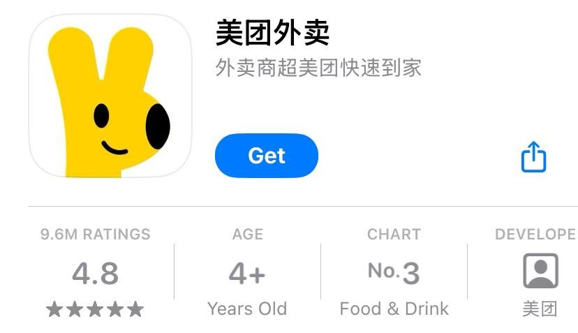
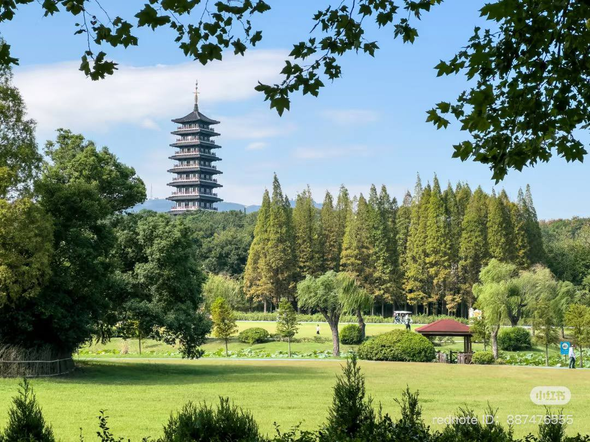
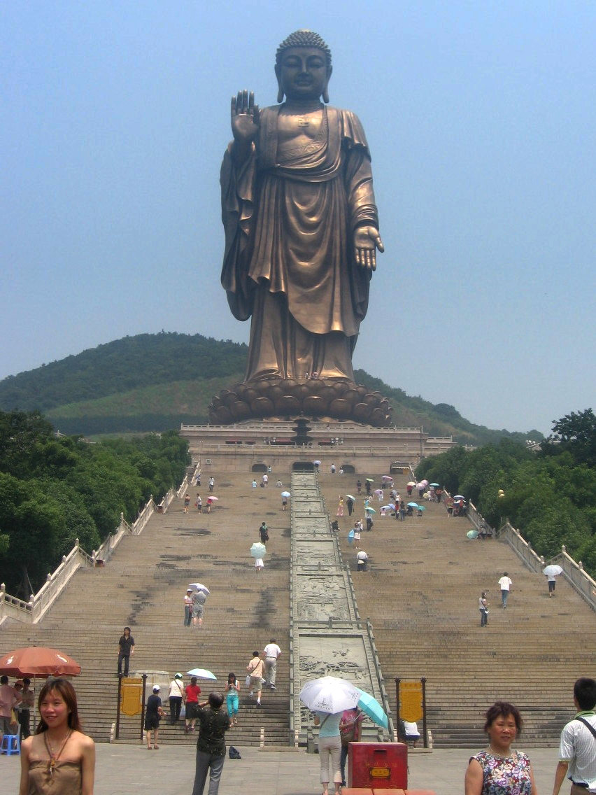

Getting Around & Attractions
Getting Around
Google maps doesn't work well in China, use Baidu or amap instead:
Taxis can be ordered from within the map apps themselves, or in big cities just wave one down - they will accept AliPay
Taxies are pretty much all Uber-style, use the map app to order one, or directly from Didi (Chinese Uber)
For Uber-eats style, you can use MeiTuan
Attractions
There's heaps to do in an around Yixing, and Wuxi! Here's a small selection
Yixing Attractions:
Tomb of the poet Su Dong Po
Historic site in Yixing. Dong Po Pork is named after this guy
Yixing Ceramics Museum

Yixing is well known for its ceramics
Yixing Library
Yixing Pottery Gallery
Ceramics museum, library, and pottery gallery are all fairly close and minor attractions, could be done in one day.
Yao Hu Village
A little out of town, also has food etc so maybe a day trip
Long Bei Shan Park
Beautiful park in town, 10 minutes from the hotel
Yaohan Shopping Centre
Nearby Attractions:
Ling Shan Great Budda
Picture the biggest Budda you can - then double it!
Shanjuan Caves
One of several caves around Yixing, all are good. A bit like Waitomo, but more coloured lighting
Wuxi Three Kingdoms Film and Television Centre
A cultural renactment center - they perform Han Dynasty weddings
Bamboo Sea
Endless sea of bamboo. A little out of town. The gondola ride is worth it
Nanchong St, Wuxi
Famous tourist St in Wuxi, runs either side of the river.
City of Nanjing
Large city, about an hour by bullet Train. Jiangsu province capital and Ming Dynasty capital - lots of interesting historical stuff.